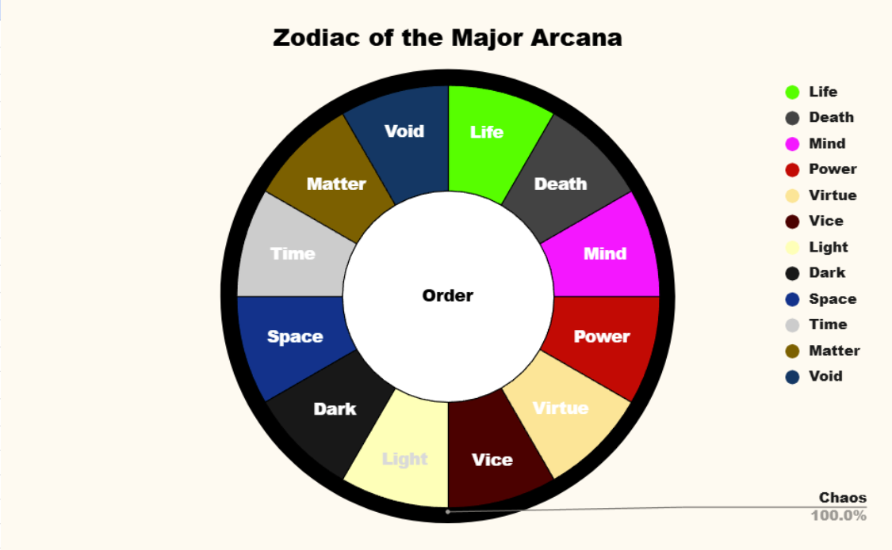

The 12 magic principles are called the Major Arcana. They consist of Mind, Power, Life, Death, Virtue, Vice, Light, Dark, Space, Time, Matter, and Void. Under the Major Arcana, subclasses called Minor Arcana such as the Aspects and the Variant would later form. The 12 Major Arcana harboured 2 secret Arcanas, true reflections of Calamity and Serenity, the 0th Arcana Order, and the 13th Arcana Chaos.
Chaos makes up the 12 Arcanas, whereas Order makes up 0 of them.

Within the Major Arcana are smaller subclasses of magic. They are composed of the Aspects and the Variant. Aspects are composed of 2 or more Elemental Arcanas (Ex: Air + Water= Ice). Variant are farther derivatives of the original Element (Ex: Fire → Explosive)
Ikhor (Eye-core) is the name of the magical energy used by Thespians/Stars in Arkhan. Similar to Karma, but exclusive to Thespians. Casting Flairs uses up Ikhor. Ikhor is an energy produced by the Reyna organ inside Arkhanians. However, it is incredibly rare for an Arkhanian to be born without Ikhor and thus cannot do Stellargy. Ikhor can be manipulated and shaped as well as channelled into objects, items, as well as elements. When Thespians use Stellargy to manipulate elements, they are really just channelling their Ikhor into it and controlling it from within. Controlling and manipulating Ikhor is like an extension of an additional limb. Improving one’s mental and physical state increases their Ikhor reserves.
Ikhor and Stamina are separate but connected. Ikhor acts as a passive energy well, charging over time by taking a portion of Stamina and converting it into Ikhor. Ikhor “steals” from Stamina creating a reservoir, then Stamina “creates” more energy to replenish the lost energy. Stamina is physical energy used to perform physical actions. Ikhor is magical energy used to perform Flairs. Thespians and Stars have both. Ikhor regenerates slower and is a much smaller reserve than Stamina, however it has more powerful effects. If Thespians run out of Ikhor, they still have their Stamina to do physical tasks. However, if Thespians run out of Stamina, they are unable to perform Flairs, as Stamina is needed to convert into Ikhor, but not the other way around.
Kinetic energy is used to transform Stamina into Ikhor. The body generates kinetic energy passively even when not moving, albeit slowly. Thus Ikhor is always slowly and passively being generated, even when not doing anything. However action quickens the process. Thus one must spend Stamina in order to generate Ikhor. This is why Thespians fight so theatrically and stylistically. The more movement, spins, flips, and poses they incorporate mid fight, the more Ikhor they generate in order to use for Flairs. A neutral stance is inefficient at converting Stamina into Ikhor, so adopting varied poses and stances yields better results. Thespians must carefully balance Ikhor generation and Stamina conservation to maintain combat efficiency. This ties into the Rule of Ornamentality.
Ikhor in actuality is the blood of the Chaos god Calamity. Thus when you are casting Flairs, you are actually creating chaos.
Stellargy is the practice of studying the Arcana and casting Flairs. People who study and practice Stellargy are called Thespians, while the gods of Stellargy are called Stars. Originally humans were not meant to learn or be able to use Stellargy due to not having any Ikhor. The ancestors of Arkhan sought great power like the Stars that governed them, so they sought the dead corpse of Reyna Gaius, Mother Nature, after her battle against Death, the Grand Reaper. In an unholy ritual dubbed by Arkhan historians and conspiracists as “The Black Banquet”, the ancestors consumed her flesh, leading to a mutation in their bodies that caused the growth of the Reyna organ, a tumorous organ attached to their heart. This led to the ability to produce Ikhor.
The study and practice of magic spells and the Arcana in Arkhan is called Stellargy. The spells themselves are called Flairs. Names have power. Flairs are spells holding the names of famous humans, places, events, and even ideas (Ex: Oppenheimer, Olympus, Ragnarok, Laplace’s Demon). Whether the legend or history behind the name is true or exists inside reality is not important, for it exists based on how the world remembers or perceives it.
Even fictional characters can become a Flair as long as humans thought of it. The cognition, fantasies, and memories of humanity are so powerful that they alter the reality of the world around them, creating Flairs. Flairs are actually records stored in the Akashic Records. Each time a grand achievement is made or a legend is born, a new star in space is born.